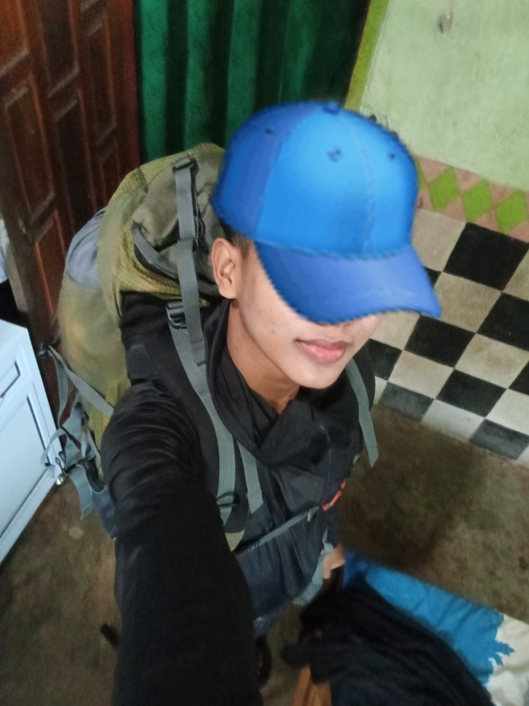

Dava Maulana Afandi Ahmad
Content Creator | Web Developer | Tech Enthusiast. Selamat datang di profil saya!
Lokasi
sumatra jawa, Indonesia
Tgl Lahir
27 september 2010
Profesi
Siswa smk muhammadiyah sekampung
Hobi
Coding & Hiking
Instagram
TikTok
X (Twitter)
Threads
YouTube
LinkedIn
GitHub
Web Perayaan UlangTahun
© inxy5 2026